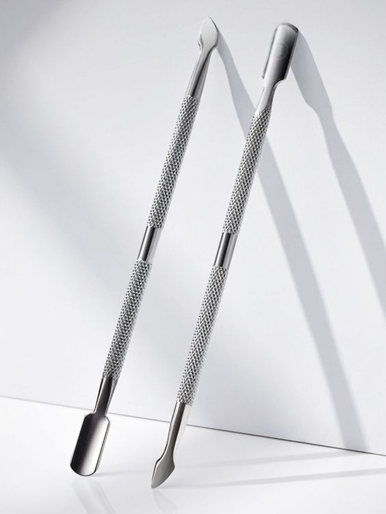
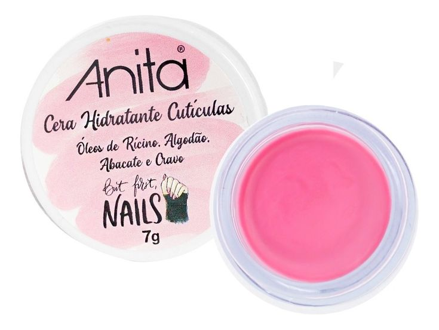
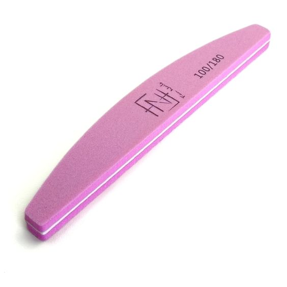
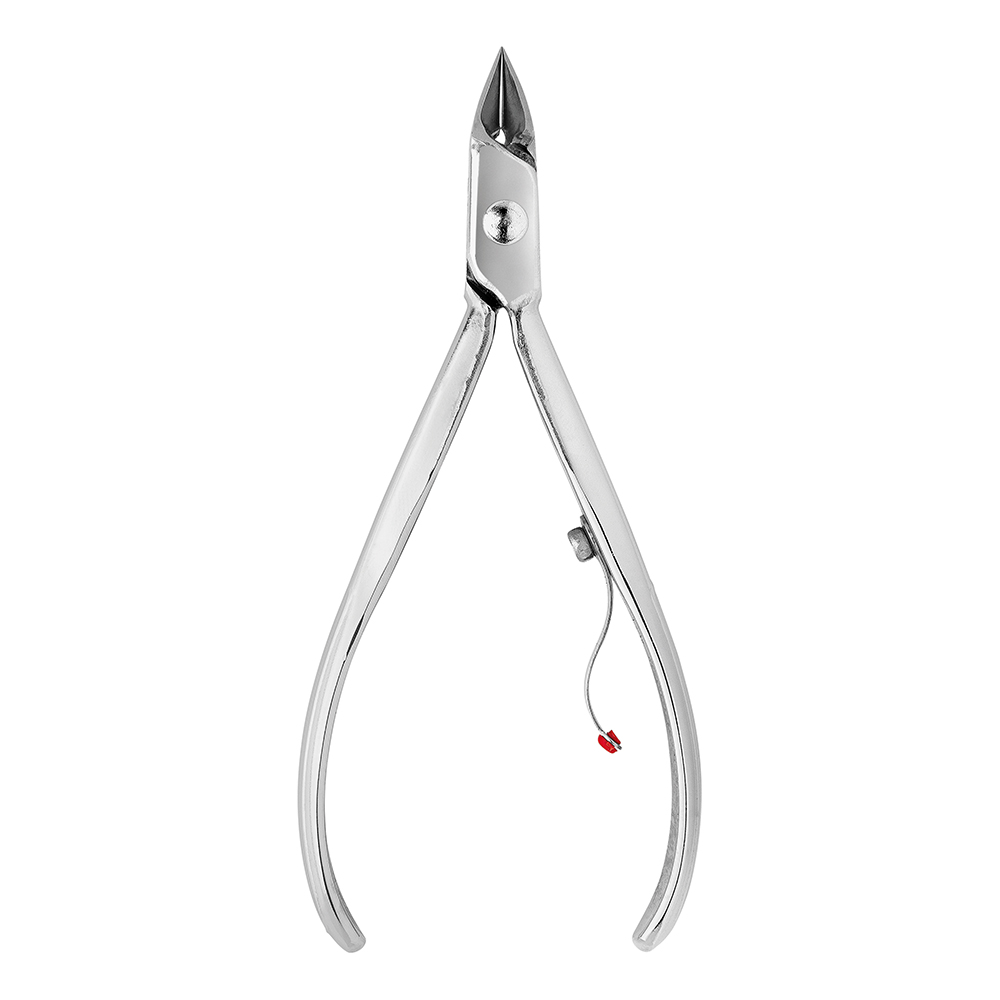
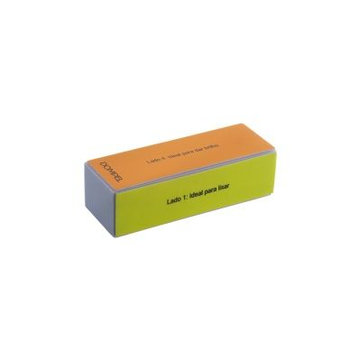
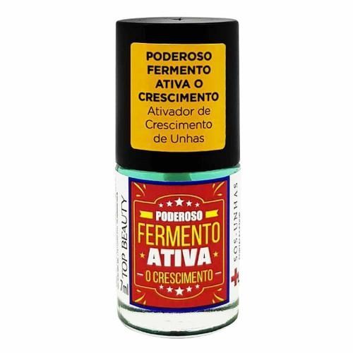
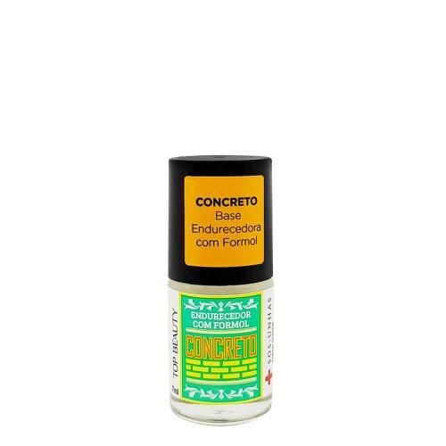
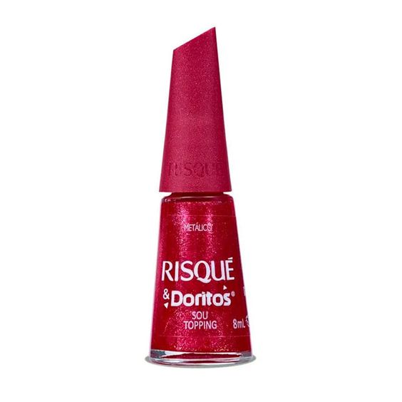
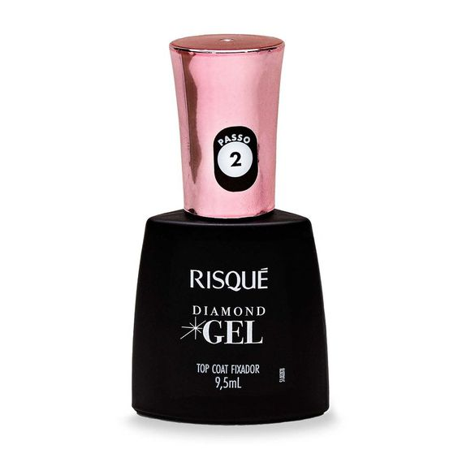
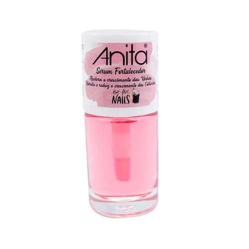

Olá, eu me chamo Lorena e tenho 16 anos. Aqui vai um tutorial para você aprender a cuidar das suas unhas.
1. Empurrar as cutículas com a ajuda de uma espátula.

2. Passar um hidratante próprio para cutículas.

3. Lixe suas unhas com a parte mais fina da lixa para manter o comprimento.

4. Tire sua cutícula com o uso de um alicate igual o da imagem abaixo.

5. Use uma lixa bloco em vai e vem na horizontal para remover as ondulações.

6. Passe uma camada de base de fermento e espere secar.

7. Passe outra camada de base de concreto para fortalecer a unha.

8. Passe duas camadas de um esmalte de sua preferência, eu usei o Risqué Sou topping.

9. Passe um extra brilho de sua escolha, uma sugestão é o top coat em gel da Risqué que ajuda na secagem.

10. Finalize com o sérum hidtrantante.
